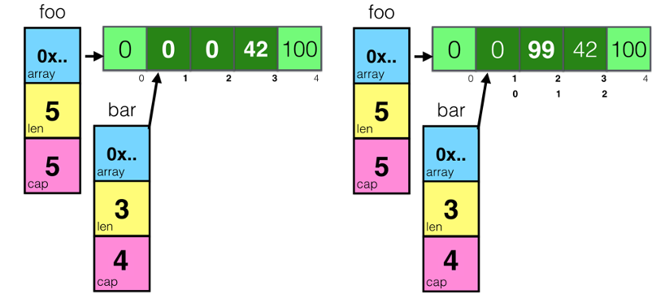
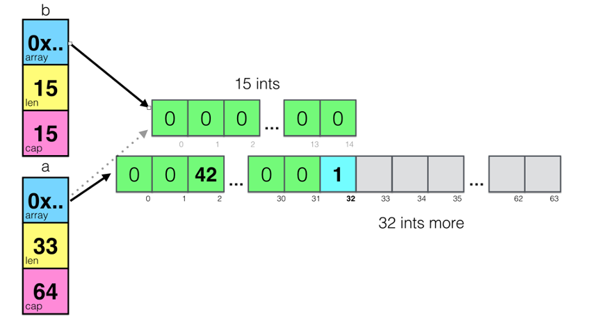

基础概念
在本篇文章中，会对Go语言编程模式的一些基本技术和要点，这样可以让你更容易掌握Go语言编程 其中，主要包括，数组切片的一些小坑，还有接口编程，以及时间和程序运行性能相关的话题
Slice
切片 这个东西在Go语言中不是数组，而是一个结构体，其定义如下：
type slice struct { array unsafe.Pointer //指向存放数据的数组指针 len int //长度有多大 cap int //容量有多大 }
用图示来看，一个空的slice的表现如下：

熟悉C/C++的同学一定会知道，在结构体里用数组指针的问题――数据会发生共享！
下面来看一下slice的一些操作：
foo = make([]int, 5) foo[3] = 42 foo[4] = 100 bar := foo[1:4] bar[1] = 99
对于上面这段代码：
- 创建一个foo的slice，其中的长度和容量都是5
- 对foo所指向的数组中的索引为3和4的元素进行赋值
对foo做切片后赋值给bar，再修改bar[1]

通过上图可以看到，因为foo和bar的内存是共享的，所以，foo和bar的对数组内容的修改都会影响到对方
接下来，再来看一个数据操作 append 的示例：
a := make([]int, 32) b := a[1:16] a = append(a, 1) a[2] = 42
上面这段代码中：
- 把 a[1:16] 的切片赋给到了 b ，此时，a 和 b 的内存空间是共享的
对 a做了一个 append()的操作，这个操作会让 a 重新分享内存 ，导致 a 和 b 不再共享 ，如下图所示：

从上图可以看以看到 append()操作让 a 的容量变成了64，而长度是33
需要重点注意一下：append()这个函数在 cap 不够用的时候就会重新分配内存以扩大容量，而如果够用的时候却不会重新分享内存
再来看一个例子：
func main() { path := []byte("AAAA/BBBBBBBBB") sepIndex := bytes.IndexByte(path,'/') dir1 := path[:sepIndex] dir2 := path[sepIndex+1:] fmt.Println("dir1 =>",string(dir1)) //prints: dir1 => AAAA fmt.Println("dir2 =>",string(dir2)) //prints: dir2 => BBBBBBBBB dir1 = append(dir1,"suffix"...) fmt.Println("dir1 =>",string(dir1)) //prints: dir1 => AAAAsuffix fmt.Println("dir2 =>",string(dir2)) //prints: dir2 => uffixBBBB }
上面这个例子中，dir1 和 dir2 共享内存，虽然 dir1 有一个 append() 操作，但是因为 cap 足够，于是数据扩展到了dir2 的空间。下面是相关的图示（注意上图中 dir1 和 dir2 结构体中的 cap 和 len 的变化）

如果要解决这个问题，只需要修改一行代码：
dir1 := path[:sepIndex]
修改为：
dir1 := path[:sepIndex:sepIndex]
新的代码使用了 Full Slice Expression，其最后一个参数叫 Limited Capacity ，于是，后续的 append() 操作将会导致重新分配内存
深度比较
一个复杂对象可以是 内建数据类型 ， 数组 ， 结构体 ， map 等
在复制结构体的时候，需要比较两个结构体中的数据是否相同时，这里必须使用深度比较，而不是只是简单地做浅度比较
这里需要使用到反射 reflect.DeepEqual ，下面是几个示例：
import ( "fmt" "reflect" ) func main() { v1 := data{} v2 := data{} fmt.Println("v1 == v2:",reflect.DeepEqual(v1,v2)) //prints: v1 == v2: true m1 := map[string]string{"one": "a","two": "b"} m2 := map[string]string{"two": "b", "one": "a"} fmt.Println("m1 == m2:",reflect.DeepEqual(m1, m2)) //prints: m1 == m2: true s1 := []int{1, 2, 3} s2 := []int{1, 2, 3} fmt.Println("s1 == s2:",reflect.DeepEqual(s1, s2)) //prints: s1 == s2: true }
接口编程
下面来看段代码，其中是两个方法，它们都是要输出一个结构体，其中一个使用一个 函数 ，另一个使用一个 成员函数 ：
func PrintPerson(p *Person) { fmt.Printf("Name=%s, Sexual=%s, Age=%d\n", p.Name, p.Sexual, p.Age) } func (p *Person) Print() { fmt.Printf("Name=%s, Sexual=%s, Age=%d\n", p.Name, p.Sexual, p.Age) } func main() { var p = Person{ Name: "Hao Chen", Sexual: "Male", Age: 44, } PrintPerson(&p) p.Print() }
在 Go 语言中，使用“成员函数”的方式叫“Receiver” 这种方式是一种封装，因为 PrintPerson()本来就是和 Person强耦合的，所以理应放在一起 更重要的是，这种方式可以进行接口编程，对于接口编程来说，也就是一种抽象，主要是用在“多态”
在这里想讲另一个Go语言接口的编程模式。首先，来看一下，有下面这段代码：
type Country struct { Name string } type City struct { Name string } func (c Country) PrintStr() { fmt.Println(c.Name) } func (c City) PrintStr() { fmt.Println(c.Name) } c1 := Country {"China"} c2 := City {"Beijing"} c1.PrintStr() c2.PrintStr()
可以看到，其使用了一个 Printable 的接口，而 Country 和 City 都实现了接口方法 PrintStr() 而把自己输出
然而，这些代码都是一样的。能不能省掉呢？
可以使用“结构体嵌入”的方式来完成这个事，如下的代码所示：
type WithName struct { Name string } type Country struct { WithName } type City struct { WithName } func (w WithName) PrintStr() { fmt.Println(w.Name) } c1 := Country {WithName{ "China"}} c2 := City { WithName{"Beijing"}} c1.PrintStr() c2.PrintStr()
引入一个叫 WithName 的结构体
然而，所带来的问题就是，在初始化的时候，变得有点乱。那么有没有更好的方法？
下面是另外一个解决方案：
type Country struct { Name string } type City struct { Name string } type Stringable interface { ToString() string } func (c Country) ToString() string { return "Country = " + c.Name } func (c City) ToString() string{ return "City = " + c.Name } func PrintStr(p Stringable) { fmt.Println(p.ToString()) } d1 := Country {"USA"} d2 := City{"Los Angeles"} PrintStr(d1) PrintStr(d2)
上面这段代码，使用了一个叫 Stringable 的接口，用这个接口把 业务类型 Country 和 City 和 控制逻辑 Print() 给解耦了。于是，只要实现了Stringable 接口，都可以传给 PrintStr() 来使用
这种编程模式在Go 的标准库有很多的示例，最著名的就是 io.Read 和 ioutil.ReadAll 的玩法 其中 io.Read 是一个接口，你需要实现他的一个 Read(p []byte) (n int, err error) 接口方法，只要满足这个规模，就可以被 ioutil.ReadAll这个方法所使用 这就是面向对象编程方法的黄金法则：“Program to an interface not an implementation”
接口完整性检查
另外可以看到，Go语言的编程器并没有 严格检查一个对象是否实现了某接口所有的接口方法 ，如下面这个示例：
type Shape interface { Sides() int Area() int } type Square struct { len int } func (s* Square) Sides() int { return 4 } func main() { s := Square{len: 5} fmt.Printf("%d\n",s.Sides()) }
Square 并没有实现 Shape 接口的所有方法，程序虽然可以跑通，但是这样编程的方式并不严谨 如果需要强制实现接口的所有方法，那么应该怎么办呢？
在Go语言编程圈里有一个比较标准的作法：
var _ Shape = (*Square)(nil)
声明一个 _ 变量（没人用），其会把一个 nil 的空指针，从 Square 转成 Shape，这样，如果没有实现完相关的接口方法，编译器就会报错：
cannot use (*Square)(nil) (type *Square) as type Shape in assignment: *Square does not implement Shape (missing Area method)
这样就做到了个强验证的方法
时间
对于时间来说，这应该是编程中比较复杂的问题了 时间有时区、格式、精度等等问题，其复杂度不是一般人能处理的 所以一定要重用已有的时间处理，而不是自己干
在 Go 语言中，一定要使用 time.Time 和 time.Duration 两个类型：
- 在命令行上， flag 通过 time.ParseDuration 支持了 time.Duration
- JSon 中的 encoding/json 中也可以把 time.Time 编码成 RFC 3339 的格式
- 数据库使用的 database/sql 也支持把 DATATIME 或 TIMESTAMP 类型转成 time.Time
- YAML你可以使用 gopkg.in/yaml.v2 也支持 time.Time 、 time.Duration 和 RFC 3339 格式
如果要和第三方交互，实在没有办法，也请使用 RFC 3339 的格式
最后，如果要做全球化跨时区的应用，一定要把所有服务器和时间全部使用 UTC 时间
性能提示
Go 语言是一个高性能的语言，但并不是说这样就不用关心性能了，还是需要关心的
下面是一些在编程方面和性能相关的提示：
- 如果需要把数字转字符串，使用 strconv.Itoa() 会比 fmt.Sprintf() 要快一倍左右
- 尽可能地 避免把String转成[]Byte 。这个转换会导致性能下降
- 如果在for-loop里对某个slice 使用 append()，请先把 slice的容量很扩充到位 ，这样可以避免内存重新分享以及系统自动按2的N次方幂进行扩展但又用不到，从而浪费内存
- 使用 StringBuffer 或是 StringBuild 来拼接字符串，会比使用 + 或 += 性能高三到四个数量级
- 尽可能的使用并发的 go routine ，然后使用 sync.WaitGroup 来 同步分片 操作
- 避免在热代码中进行内存分配，这样会导致gc很忙
- 尽可能的使用 sync.Pool 来重用对象
- 使用 lock-free 的操作，避免使用 mutex，尽可能使用 sync/Atomic 包
- 使用 I/O缓冲 ，I/O是个非常非常慢的操作
- 使用 bufio.NewWrite() 和 bufio.NewReader() 可以带来更高的性能
- 对于在for-loop里的固定的正则表达式，一定要使用 regexp.Compile() 编译正则表达式。性能会得升两个数量级
- 如果需要更高性能的协议，要考虑使用 protobuf 或 msgp 而不是JSON
- 因为JSON的序列化和反序列化里使用了反射
- 在使用map的时候，使用 整型的key 会比字符串的要快，因为整型比较比字符串比较要快